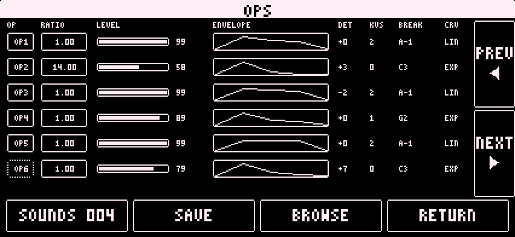

FM
The FM engine is a DX7-compatible voice. It has 16 voices.

Play
- Tap a part set to FM on the display grid.
- Play notes from the Digitakt on the part's channel.
- Turn pages with PREV and NEXT.
Pages
- PERF: the arrows beside the voice name step through the FM presets. VOLUME, CUTOFF, RESO, BRIGHT, MOD DECAY, FEEDBACK, ATTACK, RELEASE, LFO DEPTH, DLY SEND, REV SEND.
- FILTER: FILTER TYPE (MSFA, MOOG, CCCP), CUTOFF, RESO, ENV AMT, and the filter envelope A, D, S, R. In MSFA mode the filter envelope has no effect.
- OPS: six operator rows: OP, RATIO, LEVEL, ENVELOPE, DET, KVS, BREAK, CRV. Tap the OP number to switch an operator on or off. Tap an ENVELOPE to open EG for that operator. Tap KVS, BREAK or CRV to open SCALE for that operator.
- MOD: ALGORITHM (- and +), LFO (SPEED, DELAY, PMD, AMD, waveform, KEY SYNC), PITCH ENVELOPE.
- EG: operator selector, envelope with rate and level steppers.
- SCALE: operator selector and the scaling and sensitivity steppers.

Sustain pedal (CC 64) holds released notes. Pitch bend, mod wheel, aftertouch and breath are ignored.
Default CC 70 to 77: CUTOFF, RESO, BRIGHT, MOD DECAY, FEEDBACK, ATTACK, RELEASE, volume.
Long press a knob to assign a CC.
[TODO: how to load a DX7 .syx file in the app]
[TODO: what BRIGHT, MOD DECAY and the other PERF knobs change in plain words]